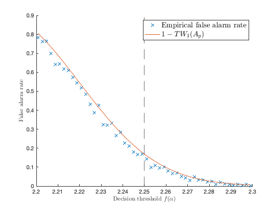

Section 3.1.1: GLRT asymptotics
This page contains simulations in Section 3.1.1.
Contents
Detection of statistical information from white noise with GLRT method
close all; clear; clc coeff = 2; p = 128*coeff; n = 512*coeff; c = p/n; a = [ones(p/2,1); -ones(p/2,1)]; % "determnistic" data structure a = a/norm(a); sigma2 = 1; nb_average_loop = 500; f_alpha_loop = (1+sqrt(c))^2+linspace(-5,5,50)*n^(-2/3); emp_type_1_error = zeros(size(f_alpha_loop)); theo_type_1_error = zeros(size(f_alpha_loop)); T = @(X) norm(X*(X')/n)/( trace(X*(X')/n)/p); for i = 1:length(f_alpha_loop) f_alpha = f_alpha_loop(i); % decision thredhold tmp_error = 0; for average_loop = 1:nb_average_loop %s = randn(n,1); % random signal X = sqrt(sigma2)*randn(p,n); tmp_error = tmp_error + (T(X)< f_alpha); end emp_type_1_error(i) = tmp_error/nb_average_loop; [~,theo_type_1_error(i)] = tracy_widom_appx((f_alpha - (1+sqrt(c))^2)*(1+sqrt(c))^(-4/3)*c^(1/6)*n^(2/3), 1); end figure hold on plot(f_alpha_loop,emp_type_1_error,'x') plot(f_alpha_loop,theo_type_1_error) xline((1+sqrt(c))^2,'--'); xlabel('Decision threshold $f(\alpha)$', 'Interpreter','latex') ylabel('False alarm rate', 'Interpreter','latex') legend('Empirical false alarm rate', '$TW_1 (A_p)$', 'Location','southeast', 'Interpreter','latex', 'FontSize', 15)
FUNCTION
function [pdftwappx, cdftwappx] = tracy_widom_appx(x, i) % % [pdftwappx, cdftwappx]=tracywidom_appx(x, i) % % SHIFTED GAMMA APPROXIMATION FOR THE TRACY-WIDOM LAWS, by M. Chiani, 2014 % code publicly available https://www.mathworks.com/matlabcentral/fileexchange/44711-approximation-for-the-tracy-widom-laws % % TW ~ Gamma[k,theta]-alpha % % [pdf,cdf]=tracywidom_appx(x,i) for i=1,2,4 gives TW1, TW2, TW4 % kappx = [46.44604884387787, 79.6594870666346, 0, 146.0206131050228]; % K, THETA, ALPHA thetaappx = [0.18605402228279347, 0.10103655775856243, 0, 0.05954454047933292]; alphaappx = [9.848007781128567, 9.819607173436484, 0, 11.00161520109004]; cdftwappx = cdfgamma(x+alphaappx(i), thetaappx(i), kappx(i)); pdftwappx = pdfgamma(x+alphaappx(i), thetaappx(i), kappx(i)); end function pdf=pdfgamma(x, ta, ka) if(x > 0) pdf=1/(gamma(ka)*ta^ka) * x.^(ka - 1) .* exp(-x/ta); else pdf=0 ; end end function cdf=cdfgamma(x, ta, ka) if(x > 0) cdf=gammainc(x/ta,ka); else cdf=0; end end